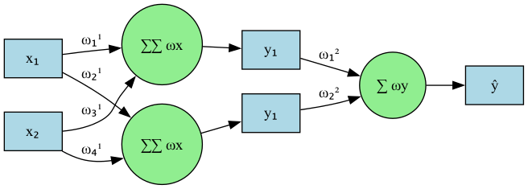
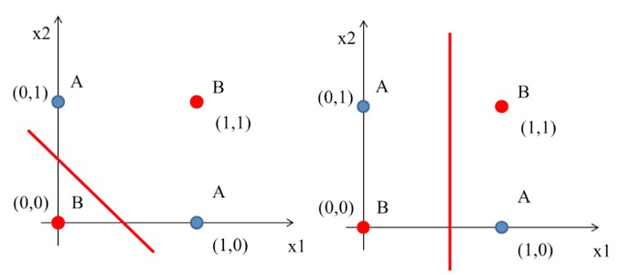
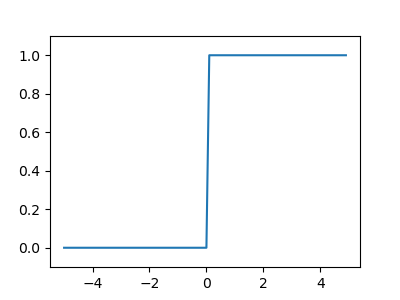
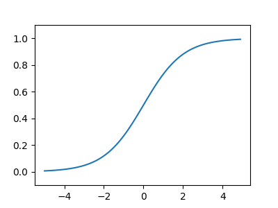
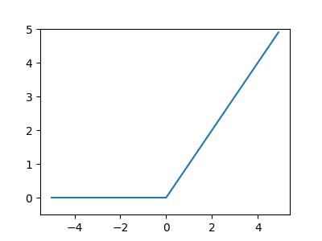

Activation Function
Table of Contents

1. 簡介
在神經網路中，有一個非常重要的元件叫做 Activation Function（啟動函數）。這個詞的中文翻譯有很多版本，常見的包括：
- 啟動函數
- 激勵函數
- 激發函數
- 激活函數（常見於中國用語）
要了解Activation Function在AI模型中所扮演的角色，我們可以這樣理解：它負責判斷一個神經元接收到的訊號值不值得被「啟動」留下來，或者該被「關閉」（等於沒貢獻）。
Activation Function 是讓神經網路真正「有智慧」的關鍵之一，它賦予神經元選擇性與彈性，不只是單純的數學加總而已。一個神經元的計算流程大致如下：
- 神經元接收到輸入值，乘上各自對應的權重（weights）
- 計算加總後的結果
- 經由 Activation Function 判斷這個訊號是否強大到需要被「啟動」
- 過了門檻（threshold）：輸出變為 1（或接近 1）
- 沒過門檻：輸出變為 0（或接近 0）
1.1. 線性模型的限制與啟動函數的必要性
如果一個神經網路由沒有使用 Activation Function 的感知器（Perceptron）所組成，那它本質上只是個線性模型。線性模型無法處理複雜的非線性問題。
為了解釋這個概念，我們來看看底下這個堆疊兩層感知器的例子，這個例子中我們假設有兩個輸入特徵 \(x_1\) 和 \(x_2\)，沒有使用 Activation Function，為了讓概念更清楚，我們也暫時忽略偏移值(bias) \(b\)，只看權重\(w\)與輸入\(x\)。 的感知器只能計算出一個線性組合：

Figure 1: Stacked perceptrons
其中每層的運算如下：
\begin{align} y_1 = w_1^1x_1 + w_2^1x_2 \\ y_2 = w_3^1x_1 + w_4^1x_2 \\ \hat{y} = w_1^2y_1 + w_2^2y_2 \end{align}若將 \(y_1\) 與 \(y_2\) 代入 \(\hat{y}\) 中： \[\hat{y} = w_1^2(w_1^1x_1 + w_2^1x_2) + w_2^2(w_3^1x_1 + w_4^1x_2)\] 整理後： \[\hat{y} = (w_1^1w_1^2 + w_2^1w_2^2)x_1 + (w_3^1w_1^2 + w_4^1w_2^2)x_2\]
這表示：
- 雖然我們堆了兩層，但最後結果仍是 輸入變數 x1,x2x1,x2 的線性組合。
- 堆再多層都沒有用，本質上還是單一感知器可以做的事。
啟動函數最重要的功能在於引入神經網路非線性，因為若未加入啟動函數，卷積層與全連接層只是單純的線性運算，只是將上層的數據經過線性地組合成下層數據而已，對於線性不可分的問題仍然是無解的1。
舉個常見的例子，如果輸入的資料如圖2(這是互斥或閘XOR的例子)，紅點(B)與藍點(A)分別是兩種不同的類別，我們的目標就是利用一條直線將兩類別切開，但實際上根本辦不到，這就是線性模型的極限。

Figure 2: XOR Gate Solution ideas
如果沒有Activation Function（啟動函數）：
- 卷積層與全連接層只是簡單的線性映射
- 模型無法處理非線性可分問題
- 不論疊幾層，都只是「線性換湯不換藥」
2. 常見的啟動函數（Activation Functions）
在神經網路中，啟動函數的主要目的在於引入非線性，使得模型能處理複雜、非線性可分的問題。以下介紹幾種常見的啟動函數：
2.1. Step function（階梯函數）
Step 函數是最早期的啟動函數之一。它的規則很簡單：
- 如果輸入大於 0，輸出為 1
- 否則輸出為 0
這裡是它的數學表示式（見公式 \eqref{orga89ae26}）與對應圖形（圖3)：
\begin{equation} \label{orga89ae26} h(x) = \begin{cases} 1 & \text{if } x > 0 \\ 0 & \text{if } x\leq 0 \end{cases} \end{equation}1: import numpy as np 2: import matplotlib.pylab as plt 3: 4: def step_function(x): 5: return np.array(x>0, dtype=np.int) 6: 7: x = np.arange(-5.0, 5.0, 0.1) 8: y = step_function(x) 9: plt.figure(figsize=(4,3)) 10: plt.plot(x, y) 11: plt.ylim(-0.1, 1.1) 12: plt.savefig("images/stepFuncPlot.png") 13: return "images/stepFuncPlot.png"

Figure 3: 階梯函數圖
Step 函數的優點在於：
- 簡單易懂：其邏輯非常直觀，容易實作。
- 二元輸出：輸出只有 0 或 1，適合二元分類問題。
至於其缺點則包括：
- 不連續：在 0 處不連續，這會導致梯度下降法無法有效學習。
- 無法處理多類別問題：只能處理二元分類，無法擴展到多類別問題。
2.2. Sigmoid
Sigmoid 函數能將輸入轉換為 0 到 1 之間的實數，曲線平滑，常用於輸出表示機率。公式\eqref{org2408908}即為 sigmoid 函數(sigmoid function)，其中的\(exp(-x)\)代表\(e^{-x}\)，\(e\)為納皮爾常數(Napier’s constant)，這是一個值為2.71828的實數。
\begin{equation} \label{org2408908} h(x) = \frac{1}{1+exp(-x)} = \frac{1}{1+e^{-x}} \end{equation}sigmoid 函數的 python 實作如下所述，而其圖形結果為平滑曲線(圖4)，針對輸入產生連續性的輸出，但仍與階梯函數相同，以 0 為界線，這種平滑度對於神經網路有相當重要的意義。此外，step function只能回傳 0 或 1，而 sigmoid 函數可以回傳實數。
1: import numpy as np 2: import matplotlib.pylab as plt 3: def sigmoid(x): 4: return 1 / (1 + np.exp(-x)) 5: x = np.arange(-5.0, 5.0, 0.1) 6: y = sigmoid(x) 7: print(y) 8: plt.figure(figsize=(4,3)) 9: plt.plot(x, y) 10: plt.ylim(-0.1, 1.1) 11: plt.savefig("images/sigmoidplot2.png") 12: return "images/sigmoidplot2.png"

Figure 4: sigmoid 函數圖
Sigmoid函數的特點：
- 非線性、連續可導
- 輸出範圍：(0, 1)
- 適合表示「機率」
至於其缺點則是容易出現「梯度消失(vanishing gradient)」問題，這是因為在極端輸入下，sigmoid 函數的導數趨近於 0，這會導致梯度下降法學習速度變慢。
2.3. ReLU
雖然 sigmoid 函數很早就應用於神經網路中，但目前最常使用的啟動函數則為 ReLU（Rectified Linear Unit）。ReLU的定義很簡單：若輸入超過 0，則直接輸出；若輸入小於 0，則輸出 0，如公式\eqref{org4d41100}所示：
\begin{equation} \label{org4d41100} h(x) = \begin{cases} x & \text{if } x > 0 \\ 0 & \text{if } x\leq 0 \end{cases} \end{equation}或簡寫為： \[h(x) = max(0,x)\]
至於其函數圖形則如圖5所示。
1: import numpy as np 2: import matplotlib.pylab as plt 3: def relu(x): 4: return np.maximum(0, x) 5: x = np.arange(-5.0, 5.0, 0.1) 6: y = relu(x) 7: print(y) 8: plt.figure(figsize=(4,3)) 9: plt.plot(x, y) 10: plt.ylim(-0.5, 5) 11: plt.savefig("images/ReLUPlot.png") 12: #return "ReLUPlot.png"

Figure 5: ReLU 函數圖
ReLU函數的特點：
- 非線性但非常簡單
- 計算快，收斂速度快
- 輸出範圍：[0, ∞)
- 常用於隱藏層
至於其缺點則是容易出現：輸入為負時會完全阻斷梯度（“死亡 ReLU”）。這是什麼意思呢？
想像我們有一個神經元，就像一顆燈泡，輸入電流 xx 後才會亮（有輸出），但如果輸入是負的，它就不亮（輸出是 0）。這似乎也沒什麼問題對吧，但重點是：
- 訓練神經網路的過程中，我們會根據輸出來調整權重 （這個調整的方式叫做「反向傳播」需要用到函數的導數）。
- 而，ReLU 的導數在輸入小於等於 0 時是 0！
也就是說：
- 當一個神經元的輸入長期為負
- 它的輸出永遠是 0
- 而且因為導數也是 0，訓練的時候就完全無法更新它的權重
這就像一顆「死掉」的燈泡，你再怎麼訓練，它都不會亮、不會改，這就是所謂的：死亡 ReLU（Dead ReLU）
總之，ReLU 很快、效果好，但要小心它「對負數完全不回應」的這項特性。這意味著：如果某些神經元在一開始就輸入都是負數，很可能整場訓練它都不會作用。
現在，你有沒有了解為什麼我們在進行資料預處理時，常常會將數據標準化（normalization）或正規化（normalization）了？
2.4. Softmax
Softmax 函數主要用在輸出層，適合多分類問題。它的輸出：
- 是 0 到 1 之間的實數
- 並且總和為 1
有什麼場景是很多小數總和為1的？答案是：「機率分布」
2.4.1. 特色
softmaxe 的輸出為介於 0 到 1 間的實數，此外，其輸出總和為 1，這個性質使得 softmax 函數的輸出也可解釋為「機率」。例如，前節程式碼的輸出結果為[0.01821127 0.24519181 0.73659691]，從以機率的角度我們可以說：分類的結果有 1.8%的機率為第 0 類；有 24.52%的機率為第 1 類；有 73.66%的機率為第 2 類。換言之，使用 softmax 函數可以針對問題提出對應的機率。 softmax 函數的另一個特色是其輸出結果仍保持與輸入訊息一致的大小關係，這是因為指數函數\(y=exp(x)\)為單調函數。一般而言，神經網路會把輸出最大神經元的類別當作辨識結果，然而，因為 softmax 不影響大小順序，所以一般會省略 softmax 函數。
輸出層的節點數量取決於要解決的問題，例如，如果要解決的問題為「判斷一個手寫數字的結果」，則輸出層會有 10 個節點(分別代表 0~9)，而輸出訊息最大的結點則為最有可能的答案類別。
2.4.2. 公式
2.4.3. 實作
1: #python code for softmax funtion 2: import numpy as np 3: def softmax(a): 4: exp_a = np.exp(a) 5: #exp_a = np.exp(a - np.max(a)) 6: sum_exp_a = np.sum(exp_a) 7: y = exp_a / sum_exp_a 8: return(y) 9: a = np.array([0.3, 2.9, 4.0]) 10: print(softmax(a))
[0.01821127 0.24519181 0.73659691]